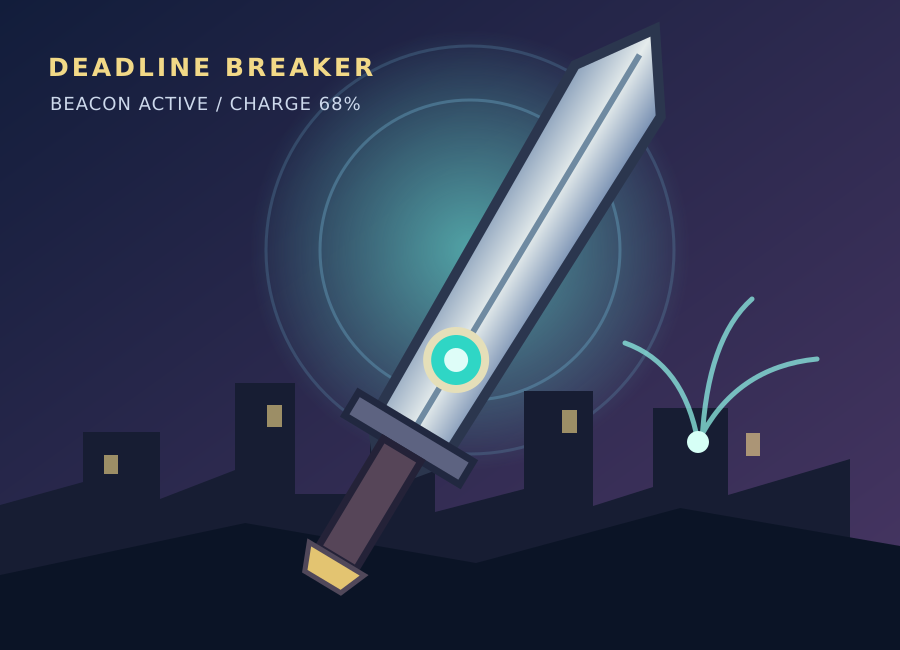

Three fun facts about me
- I collect broken headphones because I keep thinking I can fix them.
- My sword can also pick up radio signals, but it gets stuck in doorways.
- I know every shortcut in Neon City, but I lose my room key all the time.

This is the Deadline Breaker, the sword I built after the blackout.
Survival guide for working with me
- Tell me the plan and when we need to finish it.
- Bring a flashlight. My sword does not stay charged forever.
- If I get quiet, give me a minute. I am probably thinking of another route.
- If I say I can do everything myself, please ignore me and help anyway.
My greatest weaknesses
My sword needs electricity, so I cannot rely on it when the battery runs out. I also try to solve problems alone and take too long to ask for help. I would rather take the stairs than get into an elevator.
My future ambitions
I want to help restore the city's communication network so people can contact each other during a blackout. I would also like to finish my degree, fix at least one pair of headphones, and maybe find a sword that is easier to carry.